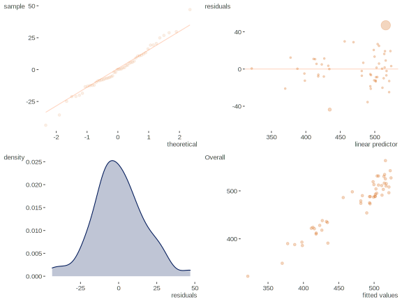

Issues
Estimation
As noted previously, estimation of GAMs in the mgcv package is conducted via a penalized likelihood approach. More detail can be found in the technical section, but conceptually this amounts to fitting the following model:
\[g(\mu) = f(x_1) + f(x_2) ... f(x_j)\]
But note that each smooth has its own model matrix made up of the basis functions. So for each smooth covariate \(j\) we have:
\[f_j = \tilde{X}_j \tilde{\beta}_j\]
Given a matrix of coefficients \(S\), we can more formally note a penalized likelihood function:
\[l_p(\beta)=\displaystyle l(\beta) - \frac{1}{2}\sum_j\lambda_j \beta^\mathrm{T} S_j\beta\]
where \(l(\beta)\) is the usual GLM likelihood function, and \(\lambda_j\) are the smoothing parameters. The part of the function including \(\lambda\) penalizes curvature in the function, where \(\lambda\) establishes a trade-off between the goodness of fit and the smoothness, and such an approach will allow for less overfitting. As \(\lambda\rightarrow\infty\), we’d have a linear estimate for \(f_j\), while \(\lambda = 0\) would allow any \(f\) that interpolates the data19. Technically we could specify the smoothing parameters explicitly, and the Appendix has some ‘by-hand’ code taken directly from Wood (2006) with only slight modifications, where the smoothing parameters are chosen and compared.
Smoothing parameters however are in fact estimated rather than arbitrarily set, and this brings us back to the cross-validation procedure mentioned before. Smoothing parameters are selected which minimize the GCV score by default, though one has other options, e.g. using REML as with mixed models. Note that there are other approaches to estimation such as backfitting, generalized smoothing splines and Bayesian.
Shrinkage & Variable Selection
Some smooths are such that no matter the smoothing parameter, there will always be non-zero coefficients for the basis functions. An extra penalty may be added such that if the smoothing parameter is large enough, the coefficients will shrink to zero, and some smoothing bases will have such alternative approaches available20. In this manner, one can assess whether a predictor is adding anything to the model, i.e. if it’s effective degrees of freedom is near zero, and perhaps use the approach as a variable selection technique.
Effective degrees of freedom again
If we define a matrix \(F\) that maps the unpenalized estimates of \(\beta\) to the penalized estimates such that
\[F = (X^T X + S)^{-1} X^T X\]
and note
\[\tilde{\beta} = (X^T X)^{-1} X^T y\] \[\hat{\beta} = F\tilde{\beta}\]
the diagonal elements of \(F\) are where the effective degrees of freedom for each covariate come from.
Choice of Smoothing Function
A number of smooths are available with the mgcv package, and one can learn more via the help file for smooth.terms (link). In our models, we have used cubic regression splines and thin plate regression splines (TPRS), the latter being the default for a GAM in this package. As a brief summary, TPRS work well in general in terms of performance and otherwise has some particular advantages, and has a shrinkage alternative available. One should still feel free to play around, particularly when dealing with multiple smooths, where the tensor product smooths would be better for covariates of different scales.
Diagnostics
We have some built-in abilities to examine whether there are any particular issues, and we can try it with our second GAM model.
This visualization is from visibly::plot_gam_check.

The plots are of the sort we’re used to from a typical regression setting, though it’s perhaps a bit difficult to make any grand conclusion based on such a small data set. One can inspect the quantile-quantile plot directly with qq.gam. The printed output on the other hand contains unfamiliar information, but is largely concerned with over-smoothing, and so has tests of whether the basis dimension for a smooth is too low. The p-values are based on simulation, so I bumped up the number with the additional argument. Guidelines are given in the output itself, and at least in this case it does not look like we have an issue. However, if there were a potential problem, it is suggested to double \(k\) The k can be set as an argument to s(var1, k=?). and refit, and if the effective degrees of freedom increases quite a bit you would probably want to go with the updated model21.
Given the penalization process, the exact choice of \(k\) isn’t too big of a deal, and can be seen as an upper limit to the flexibility of the term. The actual flexibility is determined via the penalization process. However, the defaults are arbitrary. You want to set it large enough to get at the true effect as best as possible, but in some cases computational efficiency will also be of concern. For example, in fairly complex models with many predictors, interactions, etc., it might be worthwhile to reduce \(k\) at the outset. The help file for the function choose.k provides another approach to examining \(k\) based on the residuals from the model under consideration, and provides other useful information.
Concurvity
Concurvity refers to the generalization of collinearity to the GAM setting22. In this case it refers to the situation where a smooth term can be approximated by some combination of the others. It largely results in the same problem as elsewhere, i.e. unstable estimates.
Wood provides three indices related to concurvity via the concurvity function, all range from 0 to 1 with 0 suggesting no problem, and 1 indicating that the function lies entirely in the space of one or more of the other smooth terms. See ?concurvity for details.
| para | s(Income) | s(Edu) | s(Health) | |
|---|---|---|---|---|
| worst | 0 | 0.98 | 0.97 | 0.97 |
| observed | 0 | 0.80 | 0.61 | 0.87 |
| estimate | 0 | 0.76 | 0.65 | 0.80 |
It should probably come as little surprise that we may have an issue here given the nature of the covariates. We can certainly make assumptions about wealthier nations’ education and health status, for example. What can we do? Collinearity does not lead to biased estimates, only less stable ones, and the inflated variance can potentially be overcome with more data. We certainly can’t do that here as we are dealing with country level data. That may also provide the solution, since there is nothing to generalize to, as we have the population of interest (all countries with PISA scores). In other data settings however, we may need to think hard about what to include in the model to avoid such redundancy, take dimension reduction steps beforehand, or use some other selection technique. For example, if it is the result of having several time- or spatially- covarying predictors, one might be able retain only those that best capture that effect. However, the mgcv estimation procedures have been developed with such issues in mind, and one can feel fairly confident in the results even in the presence of concurvity. See Wood (2008).
Prediction
A previous example used the predict function on the data used to fit the model to obtain fitted values on the response scale. We’d typically use this on new data. I do not cover it, because the functionality is the same as the predict.glm function in base R, and one can just refer to that. It is worth noting again that there is an option, type='lpmatrix', which will return the actual model matrix by which the coefficients must be pre-multiplied to get the values of the linear predictor at the supplied covariate values. This can be particularly useful towards opening the black box as one learns the technique.
Model Comparison Revisited
We have talked about automated smoothing parameter and term selection, and in general potential models are selected based on estimation of the smoothing parameter. Using an extra penalty to allow coefficients to tend toward zero with the argument select=TRUE is an automatic way to go about it, where some terms could effectively drop out. Otherwise we could compare models GCV/AIC scores23, and in general either of these would be viable approaches. Consider the following comparison:
mod_1d = gam(Overall ~ s(Income) + s(Edu), data=pisa)
mod_2d = gam(Overall ~ te(Income, Edu, bs="tp"), data=pisa)
## AIC(mod_1d, mod_2d)| df | AIC | |
|---|---|---|
| mod_1d | 15.59 | 476.1 |
| mod_2d | 13.25 | 489.7 |
In some cases, we might prefer to be explicit in comparing models with and without particular terms, and we can go about comparing models as we would with a typical GLM analysis of deviance. We have demonstrated this previously using the anova.gam function, where we compared linear fits to a model with an additional smooth function. While we could construct a scenario that is identical to the GLM situation for a statistical comparison, it should be noted that in the usual situation the test is actually an approximation, though it should be close enough when it is appropriate in the first place. The following provides an example that would nest the main effects of Income and Education within the product smooth, i.e. sets their basis dimension and smoothing function to the defaults employed by the tensor product smooth.
mod_A = gam(Overall ~ s(Income, bs="cr", k=5) + s(Edu, bs="cr", k=5), data=pisa)
mod_B = gam(Overall ~ ti(Income, bs="cr", k=5) + ti(Edu, bs="cr", k=5) + ti(Income, Edu, bs='cr'), data=pisa)
## anova(mod_A,mod_B, test="Chisq")| Resid. Df | Resid. Dev | Df | Deviance | Pr(>Chi) |
|---|---|---|---|---|
| 46.06 | 36644 | NA | NA | NA |
| 40.03 | 24998 | 6.03 | 11645 | 0 |
Again though, we could have just used the summary output from the second model.
Instances where such a statistical test does not appear to be appropriate within the context of the package are when terms are able to be penalized to zero; in such a case p-values will be much too low. In addition, when comparing GAMs, sometimes the nesting of models would not be so clear when there are multiple smooths involved, and additional steps may need to be taken to make sure they are nested to use the statistical test. We must make sure that each smooth term in the null model has no more effective degrees of freedom than the same term in the alternative, otherwise it’s possible that the model with more terms can have lower effective degrees of freedom but better fit, rendering the test nonsensical. Wood suggests that if such model comparison is the ultimate goal an unpenalized approach24 would be best to have much confidence in the p-values25.
References
Wood, S. N. 2006. Generalized Additive Models: An Introduction with R. Vol. 66. CRC Press.
Wood, Simon N. 2008. “Fast Stable Direct Fitting and Smoothness Selection for Generalized Additive Models.” Journal of the Royal Statistical Society: Series B (Statistical Methodology) 70 (3). Wiley Online Library: 495–518.
See also, the
selectargument to the gam function.↩I actually did this for Health, just for demonstration, and there was no change at all; it still reduced to a linear effect.↩
The topic is strangely absent in Wood’s text.↩
GCV scores are not useful for comparing fits of different families; AIC is still okay though.↩
This can be achieved with the argument
s(..., fx=T), although now one has to worry more about the k value used, as very high k will lead to low power.↩One might also examine the gss package for an ANOVA based approach to generalized smoothing splines.↩